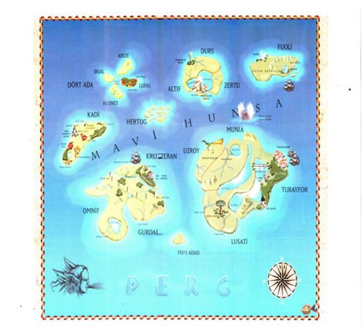

Savaşı yaratıklarla kazanan, askerlerine artık iltifat etmeyen Asuber’den ayrılan bir grup asker, Kumandan Erlat’ın beraberinde Kadi’nin Sertuk Köyü’ne gelerek köylülerden kıymetli eşyalarını getirmelerini ister. Köy halkının savaş yüzünden zaten fakir olduğunu ve o seneki vergilerini ödediklerini söyleyen yaşlı Ging’i tartaklayan Erlat, Guorin adlı gencin hamile karısı Rumin’i sözle taciz eder ve öldürür. Savaşa ayağının sakat olduğu yalanını uydurarak katılmayan Guorin, karsının gözleri önünde öldürülüşüne ses çıkaramaz. Erlat’ın intikamını alma teklifine de kaçarak cevap verir. Utancından Yumhor Ormanı’na sığınan Guorin, Geyfor ayısının saldırısına uğradığı anda aynı ormanda saklanan Leofold tarafından kurtarılır. Leofold, nişanlısı Ermira’nın geçirdiği değişimi öğrenmemesi için Guorin’e kendisini Bekçi diye tanıtır.
Bu sırada Lort Kozan ile Lort Asuber arasında ikinci savaşın vuku bulacağı haberini alan Leofold, yaratıkların dikkatini dağıtmak amacıyla Guorin’le birlikte Pasrek Düzlükleri’ne gider. Savaş başlamadan ortaya köpek başlı, aslan pençeli dev bir kuş ortaya çıkar ve Lort Kozan’ı yutar. Önüne gelene saldıran kuşun sırtına atlayan Leofold, onun üzerinde Yumhor Ormanı’na kadar gelir ve orada yaratığı pençeleriyle öldürür. Atı ile Leofold’u takip eden Guorin de ormana gelir. Burada Husnetli Büyücü Geryan, Leofold ve Guorin’in karşısına çıkar. Geryan, yaşadıklarını onlara anlatır: Geryan’ın ustası Tergurin, Öte Diyarlar’a giden dostu Ersaget’i bulmak için Kruzeran’daki Groh Dağı’nın eteklerindeki mağaraya gidecektir. Geryan da onunla birlikte hareket eder. Büyü ile açılan kapıdan giren ve on yedi gün sonra elinde Gorba adlı kılıçla geri dönen Tergurin ağır yaralıdır. Öte Diyarlar’ın çıkışında karşılaştığı Ersaget’in büyülü sözlerden oluşan Savaş Tanrısı Tshermon’un Kitabı’nı bulduğunu, onun esiri olduğunu, kitabın gücü ile Perg’i ele geçirmek istediğini söyler. Tergurin, dostunu ikna etmek ister ancak gözü kararan Ersaget kitaptan okuduğu bir cümle ile yarattığı canavarı Tergurin’in üzerine gönderir. Tergurin bu yüzden ciddi yaralar alır. Bunları anlattıktan ve Geryan’a kitabı bularak yok etmesini söyledikten sonra ölür.
Geryan, Asuber’in saflarında savaşan yaratıkları görünce Tshermon’un Kitabı’nın Asuber’i de etkisi altına aldığını anlar, Guorin ve Leofold’a Öte Diyarlar’a giderek bu kitabı bulmalarını ve yok etmeleri gerektiğini anlatır.
Hayattan hiçbir beklentisi kalmamış olan Guorin ve Leofold, teklifi kabul ederler. Geryan, savaşmayı bilmeyen Guorin’e Tergurin’in Öte Diyarlar’dan getirdiği, Erdem Tanrısı Edia’nın kılıcı Gorba’yı verir. Gorba’nın özelliği ise kabzasını tutan herkesi koruması ve iyilik yolundakilere asla zarar vermemesidir.
Kruzeran’daki mağarayı bulmaya giden kahramanların karşısına çıkan yaşlı Kâhin, onlara depremde bütün mağaraların çöktüğünü, Tshermon’un Kitabı’nın kocası Urton’a verildiğini, kitabı okuyamadıkları için sattıklarını, kocasının da Korsan Pertub’un adamları tarafından kaçırıldığını söyler. Kahramanlar, Urton’u Pertub’un limanındaki zindanda ararlarken karşılarına Rumin’in katili Erlat çıkar. Urton’u tanıyan tek kişi olduğu için onu zindandan kaçırmak zorunda kalan kahramanlardan Guorin, durumdan çok rahatsız olur. İntikamını almak ister. Guorin, Gorba’yı Erlat’ın başına indirmek üzere iken Gorba durur. Geryan, Gorba zarar vermediğine göre Erlat’ın iyilik yolunda olduğunu ifade eder. Erlat, Urton’un Pertub’un gemilerinden Hurset’le Hertuglu toprak sahiplerine satılmak üzere götürüldüğünü söyler. Bir tekne ile Hurset’i takip eden kahramanlar büyük bir kısmı denizin üzerinde duran dev bir şişeye benzeyen, binlerce uzun, halatsı kola sahip bir yaratığın ağzından çıkan kara yağmurun değdiği herkesin sebepsiz yere birbirini öldürmeye çalıştığına şahit olurlar. Hurset, savaş alanına döndüğü anda Urton’u bulup kaçıran kahramanlardan Guorin, geminin kaptanı Korman’ın da hayatını kılıcı sayesinde kurtarır. Kendisi yaratığın kolları arasında kaldığında ise Erlat imdadına yetişir. Ancak Erlat ölür.
Urton, kahramanları kitabın kendisine verildiği yere, Hiver’in Tapınağı’na götürür. Geryan, cüppesinin kolundan çıkardığı diski Hiver’in heykeline atar. Disk heykelin göğsünden girerek yok olur. Böylece Öte Diyarlar’a geçiş yapacakları, her zaman açık kapıyı bulan kahramanlar Hiver’in göğsünden içeri girerek Öte Diyarlar’a geçerler. Heykelden hızla aşağı düşen kahramanlardan Leofold, diğer ikisini kaybeder. Ormanın içinde saatlerce yürüyen Leofold, kendilerini bulundukları boyuttan soyutlayabilen Gerf kedilerinin saldırısına uğrayan küçük, sevimli bir yaratık olan Liddek’i kurtarır. Liddek, oradaki su birikintisine dalarak meyve çıkarmaktadır. Leofold ona yardım eder; Liddek, topladıkları meyveleri yüklenen Leofol’u yaşadığı yere götürür. Burası hiçbir ırk tarafında yapılamayacak şekilde inşa edilmiş duvarlarla çevrili bir köydür: Lanetliler Köyü. Bordel Krallığı’na bağlı Bordel’de hayatlarını sürdüren köy halkı kendilerine sığınan yaralı bir kadını Tshermon’un rahiplerine teslim etmeleri ve kadının hemen orada bir kazığa bağlanarak diri diri yakılması yüzünden lanetlenmiştir. Bir sabah kalktıklarında kendilerini bu duvarların içinde hapis bulurlar, yüzleri de yangında kavrulmuş gibidir. Köyün lideri Opsar, duvarların arasındaki küçük deliklerden kaçmaya çalışanların da toprak tarafından yutulduğunu söyler. Leofold, buradan kurtulmanın tek yolunun uçmak olduğunu düşünür ve yardım almak için tanrılardan sonra gelen Bilge Kartal Srenah’ın yaşadığı dağın zirvesine çıkar. Kartal onu çeşitli hayallerle sınar, zihin yoluyla Leofold’la konuşur; sınavları başarıyla geçmesinden sonra Leofold’a yardım etmeye karar verir. Srenah’ın sırtında Lanetliler Köyü’ne gelen Leofold, bu yolla köy halkını kurtarır.
Düşüş sırasında Leofold’dan ayrılan Guorin ve Geryan ise Öte Diyarlar’a Tanrılar Savaşı’nda sürülmüş olan yamyam hurg ırkının tuzağına düşerler. Onları ise yine aynı savaşta buraya sürülen Nume kurtarır. Nume, sağ kolu diğerinden kalın, çok uzak mesafelerden hedefini vuran ve Perg’de Okçu olarak bilinen, yüzyıllardır bu diyarda yaşamasına rağmen bu mekânın bir özelliği olarak yaşlanmayan bir promdur. Geryan’dan kendi istekleri ile Öte Diyarlar’a geldiklerini duyunca sevinir. Buradan çıkabileceğini düşünerek kahramanlara yardım eder. Sorularının cevabını yalnızca Bilge Tanrı Hiver’in verebileceğini söyleyen Nume, onları Hiver’in yanına götürür. Tapınaktaki tuzakları aşan kahramanlar Hiver’in katına, en üst kata çıktıklarında onlara konuşan, dev bir kelebek refakat eder. Hiver’i gören kahramanlar büyük şok yaşarlar. Sıradan bir çiftçi karısına benzeyen Hiver, onlara kendisinin ve kendisi gibilerin gerçek tanrılar değil yalnızca düzeni sağlamak amacıyla görevlendirilmiş ölümsüzler olduklarını ancak prom, burfen, hurg, insan ırklarının onları tanrılaştırdıklarını, bu yüzden savaşlar çıktığını, Kadim Güçler’in savaşı durdurarak bütün tanrıları, savaşta ön plana çıkanları Öte Diyarlar’a sürdüğünü anlatır. Kahramanlar Tshermon’un Kitabı’nı nasıl etkisiz hâle getireceklerini sorduklarında Hiver, onu yalnızca Masumiyet Tanrısı Asret’in durdurabileceğini söyler. Asret’in tutulduğu tapınağın yerini Geryan’a ilham eden Hiver, onları bir ışık dalgası içinde Leofold’un bulunduğu yere gönderir.
Kahramanlar Tshermon’un rahipleri tarafından saklanan Asret’in bulunduğu tapınağa giderler. Rahiplerle savaştıktan sonra tapınağın altında, üzerinde şekiller olan kapılardan birinin ardında dört beş yaşındaki Asret’i ve yastık olarak kullandığı Tshermon’un Kitabı’nı bulurlar. Geryan, kitabın son sayfasında yazan tek kelimeyi, Tshermon’u, okuyarak Savaş Tanrısı’nı çağırır ve yüzüğündeki zehri içer. Tshermon, kızıl ışık dalgası içinde gelir. Ancak zehirden dolayı Geryan’ın bedenine giremez, onu çağıran kişi hayatta olduğu için Perg’e de dönemez. Arada sıkışan Tshermon’a Asret sarılır ve onu öper. Tshermon yok olurken Geryan da ölür. Bu sırada Perg’de Durtemen komutasındaki son ordu Asuber’in yaratıklarına karşı şehri savunmaktadır. Denizden çıkan dev yaratığın saldırısına uğrayan donanma tamamen tahrip olmuştur. Ert Köprüleri’nde son savaşını vermeye hazırlana Durtemen ve askerlerine saldıran kuşlar Tshermon’un ölümüyle toza dönüşür. Bir süre önce kitabın son sayfasını açıp, ismini okuyarak Tshermon’u Perg’e çağıran Asuber’in bedeni Savaş Tanrısı’nın eline geçtiği için Asuber’in vücudu da yüzlerce parça hâlinde dökülür.
Öte Diyarlar’daki görevlerini tamamlayan Leofold ve Guorin yanlarında Nume ile birlikte geldikleri kapıdan Perg’e dönerler.
Perg Efsaneleri 2: Merderan’ın Sırrı
Leofold, nişanlısı Ermira’nın nasıl olduğunu öğrenmek amacıyla Guorin ve Nume ile birlikte Kadi’nin Sertuk Köyü’ne gider. Köy, harabe hâline gelmiştir. Leofold’un kâhyası Fernal, karşısındakinin efendisi olduğuna inanınca başlarına gelenleri anlatır: Asuber’in yaratıkları köyü yerle bir ettikten sonra herkes dört bir yana dağılmış, Leofold’un geri gelmemesi üzerine savaş alanını arayan Ermira, nişanlısının cesedini göremeyince yaşadığına inanarak onu aramak üzere Perg’in tek denizi Hunsa’ya açılmıştır.
Fernal, yaşananların üzerinden beş yıl geçtiğini söyleyince kahramanlar şaşırır çünkü onlara göre Öte Diyarlar’a geçeli aşağı yukarı bir ay olmuştur. Kahramanlar, Hiver’in göğsünden geçilen yani her zaman açık olan kapıda bu zamanı yitirdiklerini anlarlar.
Leofold, Ermira’yı bulmak için Lufas’ta yaşayan Büyücü Amneh’in yanına gitmeye karar verir. Geryan, ölmeden önce eski dostu Amneh’ten yardım alabileceklerini söylemiştir. Bunun üzerine kahramanlar Lufas’a giderler. Köye önce giren Guorin, Lufas’ın Rumzor Köyü’ndeki pazaryerinde Lort Asuber’le iş birliği yapan promların köle olarak kullanıldıklarına şahit olur. Bu durum Perg’in genelinde geçerlidir; promlar dışlanmışlar, silah taşımaları yasaklanmıştır.
Asuber’in yaratıklarından sonra Perg’i olası canavarlardan korumak amacıyla Avcı Kalesi kurulmuştur. Kale, yalnızca avcı yetiştirmez aynı zamanda burada büyücüler ve mucitler birlikte yeni silahlar üretirler. Durtemen, Ert Köprüleri’nde ne olduğunu anlamadan canavarların toza dönüşmesinden sonra Şanlı Komutan Durtemen olarak kalenin başına geçirilir. Yeğeni Ais ise kalede askerleri yetiştirmektedir. Uzun yıllar tehlike görülmediğinden Altıf’ta kurulan Federasyon, kalenin önce masraflarını kısmayı sonra da kaleyi dağıtmayı amaçlamaktadır. Federasyonun niyetini bilen Durtemen, elindeki gücü tamamen yitirmeden önce promların hanı Yuvgot’a verdiği sözü yerine getirmek üzere hapsedildiği Yumruk Kule’ye gelir. Savaş sonrasında bütün önemli promların onuruyla ölmesine izin verilirken Asuber’in ordusunda bir kez bile kılıç sallamayan Yuvgot, promları daha fazla baskı altına alabilmek amacıyla yıllarca zindanda tutulmuştur. O zaman verdiği sözü yerine getirmek için Durtemen kılıcını Yuvgot’un boğazına dayar, elleri titreyen Durtenen’e Yuvgot yardım eder ve ölür.
Bu olay öncesinde artık yaşlı bir komutan olan Durtemen, Ais’e Perg’de bir canavar, silahlı bir prom ve kısa kılıç taşıyan bir gencin dolaştığı haberini verir. Kalenin geleceği için bu canavarın başını getirmek üzere yola çıkan Ais ve diğer avcılar Mommar, Verum, beraberindeki askerler ile yaptıkları takip sonucu Amneh’in kulübesine varırlar. Onlardan önce kulübeye gelen kahramanlar Amneh’in öldüğünü kızı Büyücü Nela’dan öğrenirler.
Merderan, yıllar önce Perg’de bozulan sosyal ve siyasi yapıyı düzelmek amacıyla Perg’in bütün şehirlerini dolaşır ancak karşılığında itilir, kakılır, dövülür. Bunun üzerine Kadim Güçler tarafından hiç kimseye bahşedilmemiş güçlerle donatılan Merderan, eski Artek yeni Altıf şehrine gelir ve şehrin anahtarını ister, şehri korumakla yükümlü Büyücü Bernak’ın yaptığı en güçlü büyü bile Merderan’a işlemez ve büyücü hayatını kaybeder. Yönetimi ele alan Merderan şehre görülmemiş ışıltıda bir çağ yaşatır. Sahip olduğu güçle hastaları iyileştirir, toprağı bereketlendirir, iblisleri şehirden uzak tutar. Merderan yıllarla birlikte yaşlanır ve ortadan yok olur. Onun hatırasına Altıf’ta daha önce yapılmamış ve yapılmayacak güzellikte bir heykel inşa edilir ancak öğretileri unutulur.
Amneh’in araştırmalarına göre Merderan’ın güçlerinden bazıları en azından tanrısal güç taşımayanlar bu heykelin altındadır. Nela, kahramanlara kendisi ile birlikte bu kayıp büyüleri bulması için Altıf’a kadar gelmelerini, karşılığında Ermira’yı bulmaya yardımcı olacağını söyler. Teklifi kabul eden kahramanlar ertesi sabah yola çıkacakları sırada etraflarının Ais ve avcılarıyla sarıldığını görürler. Yaşanan çatışmadan Nela’nın yarattığı solucan sayesinde kurtulan kahramanlar Altıf’a giderler.
Eski Yedeç eşkıyalarından olan ve daha sonra avcıların arasına katılan ancak geçmişini kimsenin bilmediği Mommar, kulübeye önce girerek Amneh’in notlarının yazılı olduğu defteri okur, heykelin altındaki hazineye tek başına sahip olmayı düşünür ama oraya kadar diğer avcıları kullanmaya karar verir. Heykelin gizli kapısının nasıl açılacağının yazıldığı kâğıdı kopararak bahçede bulmuş gibi yapar. Kâğıdın rehberliğinde kahramanların peşine düşen Ais, Durtemen’e haber göndererek bir geminin onları Altıf’ta beklemesini ister.
Heykelin yanına gelen Nela, bulduğu altı tetiği tek tek çeker. Heykelin çevresindeki zemin bir halka hâlinde açılır ve kahramanlar bir çukura düşerler. Çukurdan sonra bir tünelin içine girmeleri gerektiğinde Leofold, Asherta’nın yuvasında yaşadıklarını hatırlar ve oraya girmek istemez. Nela, vücudunda her geçen gün artan yaralarını gösterir, heykelin altında bulacağı büyülere ihtiyacı vardır aksi takdirde ölecektir. Genç bir kadının gözleri önünde ölmesine razı olamayan Leofold, tünele girer.
Bu sırada Ais’e yardım için yola çıkan Kaptan Sanep ve gemisi Brusnek Hunsa’nın tek hâkiminin Korsan Pertub değil kendisi olduğunu ispatlamaya çalışan Jolet’in saldırısına uğrar. Sanep her şeyin bittiğini düşündüğü anda eski korsanlardan olan ancak sonrasında avcılara katılan Korman ve efsane gemisi Durkgador tarafından kurtarılır. Sanep, Ais’in peşinde olduğu kişileri Korman’a anlatır. Korman, Guorin’i hatırlar. Hayatını ve ruhunu borçlu olduğu bu genci bulmak amacıyla yola çıkar.
Bir süre sonra avcılar da heykelin altına iner ve kahramanlarla karşılaşırlar. Merderan’ın Heykeli’nin altı çeşitli yaratıklarla doludur. Bunlardan biri keskin dişleri olan, sese duyarlı ve kimseyi oradan geçirmemek için yaratılmış gurnollerdir. Gurnollerin saldırısından kendilerini kurtaran kahramanlarla aralarında bir yakınlık doğmaya başlayan avcılar heykelin altından çıkmak için iş birliği yaparlar. Kayıp büyülere giden yolu tutan gurnollerden bir başka tünelde buldukları soren yosununu kullanarak kurtulan kahramanlar girişinde çeşitli işaretler bulunan tünel ağızlarını geçtikten sonra nutel denilen yalnızca Mavi Hunsa’da yaşadıkları bilinen, ışıltılı deniz yaratıklarının saldırısından Nume’nin üstün koku alma yeteneği sayesinde kurtulurlar. Nutellerin olduğu gölü geçen kahramanlar üzerinde tahta kapısı olan yere gelirler. İçeri girdiklerinde Nela gizli geçidi açacak büyülü sözleri söylemeye hazırlandığı sırada Mommar tarafından susturulur. Mommar, defterde yazılı üç kelimeyi söyler. Duvar titrer, dalgalanır, şeklini kaybeder, saydam bir katmana dönüşür. Mommar, Nela’yı kahramanların tarafına attıktan hemen sonra hızla duvarın içine girer. Ancak bir jöle kıvamına gelen duvarda bir adım bile atamaz, orada asılı kalır. Amneh, defterin kötü niyetlilerin eline geçme tehlikesine karşı dördüncü kelimeyi Nela’ya ezberletmiştir. Nela, dördüncü kelimeyi de söyledikten sonra doğru geçit açılır. Tünele açılan geçidin sonunda çok büyük bir mağaraya gelirler. Mağaranın ortasında bir göl, gölün üzerinde de geniş bir sal bulunmaktadır. Salın üzerinde ise küçük bir kulübe yükselmektedir. Kulübenin içine giren kahramanlar yerden iki karış yukarda asılı duran ışıktan kapıyı görürler. Kapının kolu ise sürekli şekil değiştirmektedir. Leofold, kendisiyle zihinsel iletişin kuran Srenah’ın yönlendirmesiyle kapının kolunu tokalaşmak üzere uzanmış el şekline geldiğinde kavrar. Kahramanlar bir anda kendilerini korkunç yaratıklarla dolu bir arenada bulurlar. Seyirci yerinde ise siyah cüppeli bir adam onların yaratıklarla savaşını izlemektedir. Çatışma sırasında Verum ölür. Mücadeleyi kazanan kahramanlar aynı şekilde tekrar mağaraya getirilirler. Karşılarında aynı cüppeli adam durmaktadır. Bu kişi, Merderan’dır. Yaşananların açıklamasını onlara Merderan yapar: Ölüm zamanı geldiğinde kendisi için muhteşem bir yer hazırlayan Kadim Güçler tarafından çağrılan Merderan, Perg’de kalmak istediğini, en azından emanetini bırakacak birini bulana kadar ölümü ertelemek istediğini söyler. Kadim Güçler, önce buna karşı çıksa da verdiği mücadeleyi takdir ederler ve herkesi memnun edecek bir çözüm bulurlar. Arada bir yerde, kurallarını kendi koyacağı bir mekânda, emanetini teslim edecek kişiyi bekleyecektir. Sırrını güvendiği takipçilerine anlatan Merderan için bu eşsiz heykel ve yer altı tünelleri inşa edilir. Merderan içerisini istediği gibi düzenler. Dışarıya metinler, yazıtlar, söylenceler gibi bazı ipuçları gönderir. Gücüyle yarattığı engellerle sınadığı kişilerin bir kısmı nuteller bir kısmı gurnoller tarafından öldürülür, bir kısmı ise tünellerde kaybolur. Ancak kahramanlar cesaret ve fedakârlık örneği göstererek bütün engelleri aşmıştır. İçlerinde en çok korudukları Guorin olduğu için Merderan emanetini onun eline hiç acı vermeden işler. Ve bunu Fuoli’deki Olmen’e ulaştırmalarını ister. Sonrasında ise kanatlı, iğneli binlerce ışıltılı yaratığı Nela’nın üzerine göndererek onu iyileştirir. Artık sonsuzluğa karışma vakti gelen Merderan, kahramanlara salı tutan zincirleri kesmelerini söyler. Sal su ile birlikte yükselerek yukarıdaki deliklerden birinden ıssız bir adaya çıkarken Merderan da tamamen suya gömülür.
Bütün bunlar yaşanırken Korman, kaptan köşkündeki bir dolapta sakladığı küçük aslan heykelini iki eliyle kavrar ve Guorin’in yüzünü zihninde canlandırır. Küçük aslan heykeli elinin altında zıplar, titrer. Geminin burnundaki aslan da canlanarak çivilendiği yerden kurtulmak istercesine hep aynı yöne, kahramanların bulunduğu adaya doğru hamle yapar. Korman aslanın işaret ettiği yere gelince kahramanları bulur ve kurtarır. Ais, vedalaşma sırasında özel avcı eldiveninin birini Merderan’ın söylediği gibi emaneti gözlerden korumak amacıyla Guorin’e hediye eder. Korman’ın kaptanlığında kahramanlar Olmen’i bulmak için Fuoli’ye gitmek üzere yola çıkarlar.
Perg Efsaneleri 3: Bataklık Ülke
Fuoli’ye yolculukları sırasında Kaptan Korman, geminin burnundaki dişi aslanın hikâyesini anlatır: Tanrılar Savaşı’ndan önce tekdüze hayatından sıkılan soylu Oerdel, bir av partisi düzenleyerek en az yirmi köylüyü öldüren bir dişi aslanı öldürmek ister. Beş arkadaşını ikna eden Oerdel, yanlış aslanın inini ateşe verir. Aslan kurtulur ancak yavruları ölür. Üzüntüsünden kahrolan dişi aslanın yardımına Kadim Güçler yetişir. Ona katilin yüzünü hayal ederek yerini hissetme yeteneğini verirler ve katilin yüzünü de gösterirler. Dişi aslan Oerdel’in evini bulur ve önce karşısına çıkarak kendisine yalvaran Oerdel’in karısını sonra da Oerdel’i öldürür. Kadim Güçler, kendisine verilen gücü masumlara karşı kullandığı için dişi aslanı cezalandırırlar. Artık o acısını sonsuz kadar yaşamak üzere demirden bir heykele dönüştürülür. O heykelin küçük bir benzerini de Oerdel’in öksüz kalan oğluna verirler. Bu heykeli tutup kim hayal edilirse aslan onu yavrularının katili sancak ve kendini paralayacaktır.
Gemide bulunan kadın avcılardan Ameni, Nela’yı güzelliğinden dolayı kıskanır. Küçük bir kız iken fiziksel görüntüsü yüzünden arkadaşları arasında alay konusu olduğunu; çocuk doğurmaktan, aile kurmaktan vazgeçerek kılıç kullanmayı öğrenip Avcı Kalesi’ne kabul edildiği günleri hatırlar.
Fuoli’ye geldiklerinde kahramanlar beraberlerindeki askerlerle birlikte bu üçte biri bataklık ülkede derokan denilen ısıysa duyarlı yaratıkların saldırısına uğrarlar. Onları kurtaran ise Fuoli’nin yerli ırkı burfenlerdir. Ellerindeki özel yapım cam şişeleri derokonların üzerine atarak onları öldürürler. Burfenlerin lideri Koleun onları yaşadıkları kampa götürür. Fuoli’yi oluşturan bu kamp Anageh ve Telinos’ta inançlarından dolayı dışlananlar için Ermiş Rendem tarafından kurulmuştur. İnançları yüzünden ikiye ayrılan ülkede Anagehliler Gökyüzü Tanrısı Dermense’ye, Telinoslular ise denizler hükmeden Junderan’a tapmaktadırlar. Şehirleri yöneten emirler aynı zamanda bu tanrıların da temsilcileridir. Emirler inanç noktasında çok sadıktırlar ve sorgulamaya müsaade etmezler.
Rendem’in kurduğu Özgür Bölge’nin bataklığın ortasında değil de Anageh’te yaşamasını isteyen Ermiş Yuolin gizli çalışmalar yapmaktadır. Anageh Emiri Poreturn’un oğlu da bu girişimi desteklediği için babası tarafından verilen bir talimatla Beyaz Alev adlı gizli örgüt eliyle öldürülecektir.
Poreturn, Göktanrı inancının sonsuza dek yaşaması için oğlunun Telinos yiğitleri tarafından kaçırıldığı söylentisini etrafa yayar ve bunun savaş anlamına geldiğini söyler. Dermense tarafından kendisine verilen güçleri kullanarak Fuoli’nin gizli yerlerinde uyuyan savaşçıları uyandıracaktır. Telinos Emiri Jayoferm de aynı şekilde karşılık vereceğinden Fuoli’de taş taş üstünde kalmayacak, bundan Özgür Bölge de etkilenecektir.
Rendem, misafirlerinden Guorin’in elindeki şekilleri görünce onu Olmen’e götüreceğini ancak gelmesine iki hafta olduğunu söyler. Kahramanlar kayıp veliaht Erogmet’i bulmaya karar verirler. Bunun için Koleun’un rehberliğinde dev örümcek porengorlarla burfenlerin ayak basmaktan imtina ettikleri Tabu Dağlar’a çıkarlar. Aramalar sırasında kayalardan aşağı düşen Guorin, bir yaratık tarafından mağaraya götürülür. Arkadaşları bunu görünce hızla aşağı inerek Guorin’i aramaya başlarlar. Tünellerdeki gizli kapaklardan pek çok yaratık kahramanların karşısına çıkar. Nela, büyü ile alev topu yaratacağı sırada duyduğu bir sesle işlemini tamamlamaz. Sesin sahibi Erogmet’tir. Başından geçenleri yaratıkların geçmişini kahramanlara anlatır. Telinos cepkenleri giyen babasının adamlarının elinden yaralı şekilde kaçan Erogmet’in hayatını kurtaran bu yaratıklardır. Yaratıklar ise Fuoli’nin ene eski ırkı dezdometlerdir. Yüzyıllar önce iki ırkın ataları arasında yapılan anlaşma gereği bataklığa inmeyen dezdometler mağaraların içinden tüneller açarak kendilerine özgü bir şehir kurmuşlardır.
Emiri yanlarına alan kahramanlar kendilerini bekleyen rehberleri Koleun’u ağır yaralı bulurlar. Beyaz Alev örgütünün lideri Gulpes ve adamları tarafından saldırıya uğrayan Koleun ölmek üzeredir. Eşkıyalarla dövüşen kahramanlar Koleun’u da yanlarına alarak Özgür Bölge’ye giderler. Nela, Koleun’a hayat üfleyerek ölümünü geciktirmeye çalışır.
Bu sırada Poreturn, Meclis Başkanı Halkaren’in yardımıyla ayinin birinci kısmını tamamlamış, Heratoko adlı dehşetengiz savaşçıyı yüzyıllardır süren uykusundan uyandırmıştır. Ancak bunun ve diğerlerinin harekete geçmesi için ayinin ikinci ve son aşamasının da gerçekleştirilmesi lazımdır. Dermense’nin verdği süre ise dört gün sonra dolacaktır. Telinos Emiri Jayoferm de ayinin ilk iki aşamasını gerçekleştirmiştir.
Bütün bunlar vuku bulurken Kaptan Korman büyük ve küçük aslan heykelini alarak Özgür Bölge’ye getirir. Poreturn, heykeli kavrayarak babasını hayalinde canlandırır. Dişi aslan bütün gücüyle Poreturn’un sarayına doğru ilerler. Halkaren, saldırıya uğradıklarını anlayınca kendi eliyle yaptığı kaçış tünellerinden Poreturn’u sarayın dışına çıkarır. Emir, boynundaki kolyenin ortasındaki cam küçük küreyi kırar, ayinin son sözlerini söylemek üzere iken dişi aslan tarafından parçalanır. Anageh’e gelen Erogmet, yeni emir olarak görevine başlar.
Perg’de ise Federasyon arzusuna kavuşmuş, Yuvgot’un varlığının ortadan kalması ile Durtemen arasında bağlantı kurarak kaleyi kapatmaya karar vermiştir. Federasyon Başkanı Terelon, Ais’ten Avcı Kalesi’ni boşaltmasını, avcılarını ve askerlerini dağıtmasını ister. Ais ise tek talepte bulunur. Bir eline avcı eldiveni giymiş olan Guorin ve arkadaşlarına her türlü koruma ve rahatlık sağlanacaktır. Terelon teklifi kabul eder.
Olmen’in Özgür Bölge’ye gelme vakti dolmuştur. Gökyüzünde deniz kabuğuna benzer bir uçan cisim, Taşıyıcı, görülür. Yere indiğinde açılan kapaktan çıkan kişi Yueken, Olmen’in yaralandığını, bu yüzden gelemediğini söyler. Guorin, Olmen’e emaneti kendisinin teslim etmesi gerektiğini söyleyerek arkadaşlarını bilinmeyenlerle dolu bir seyahate kalkışmalarını istemez. Guorin ve Nela, yolculukları sırasında birbirlerine âşık olurlar. Nela, sevdiği adamı, Nume ve Leofold da dostlarını yalnız bırakmaz istemezler. Kahramanlar yanlarına Koleun’u da alırlar, uçan cisme binerek gözden kaybolurlar. Korman ise bir daha dişi aslanın acısından faydalanmamaya karar vererek küçük aslan heykelini Hunsa’nın sularına atar.
Perg Efsaneleri 4: Tanrıların Alfabesi
Kahramanlar, Taşıyıcı ile Perg’de Öte Diyarlar olarak bilinen Dernat’a gelirler. Yueken bir tılsım efendisidir, diğer dört tılsım efendisi, kendilerini tılsımları ve efendilerini korumaya adayan gözcüler, Perg’deki bütün savaş tılsımlarını alarak Dernat’a gelirler. Perg’deki kaos ortamı duruluncaya kadar burada bekleyecekler ve tılsımların kötü ellere geçmemesini sağlayacaklardır. Bunun için tılsımları Savaş Tanrısı Tshermon’un Tapınağı’na saklarlar. Tshermon, Dernat’tan kurtulmak için büyülü sözlerden oluşan kitabın bir fâninin eline geçmesini ve son sayfasını okuyarak onu Perg’e çağırmasını planlarken kitap Geryan’ın eline geçer. Geryan, Asuber’i kullanarak Tshermon’un Perg’e dönmesini sağladıktan sonra tapınaktan tılsımları alır. Bu sayede bütün Perg’e hükmetmeyi düşünmektedir. Tılsım Efendileri, Geryan’ı durdurmak için Merderan’ın emanetinin kendilerinde olduğu, emaneti kullanacak kişinin, Seçilmiş’in, gelmesini bekledikleri söylentisini etrafa yayarlar. Geryan, hurglarla iş birliği yaparak Tılsım Efendileri’ni yok etmek için çalışmaktadır. Kahramanlar Geryan’ın ismini duyunca büyük şaşkınlık geçirirler. Onların bildiği, tanıdığı Geryan ölmüştür.
Öte Diyarar’da yalnızca hayvanlar çoğalabilir. Tılsım Efendileri savaşlar sırasında verdikleri kayıpları kendi içlerinden karşılayamadıkları için Fuoli’ye getirilen, ölmek üzere olan esirleri avuç dolusu elmas karşılığında alarak burada iyileştirmekte veya dönüştürmektedirler.
Her Tılsım Efendisi bir tılsımı kullanabilmektedir. Yueken, unutturma; Zeron, dönüştürme; Olmen, iyileştirme; Roek ise koruma tılsımına hükmeder. Hastalar, iyileştikten sonra tercih haklarını kullanırlar. Gitmek isteyenlere burada yaşadıkları unutturulur, vefa borçlarını ödemek isteyenler ise Dernat’ta kalarak savaşmayı tercih ederler.
Tılsım Efendileri ve gözcülerin kaldığı kale, içindeki karargâh, gözcü kampı ve bir miktar toprağı içine alan bölge, Roek tarafından yapılan bir ışıktan koruma duvarı ile çevrelenmiştir. Ancak duvarda çatlaklar, incelmeler meydana geldiğinden Olmen, içeri sızan hurg silahşorları tarafından yaralanır. Roek de bu kadar büyük koruma duvarı yaptığı için bilinci yarı açık şekilde yatmaktadır. Bu yüzden kahramanlarla birlikte gelen Koleun, iyileştirilemez, Zeron tarafından dönüşüm işleminden geçirilir.
Dönüşümün sonunda ortaya ne çıkacağı çocuklar ve hayvanlar için bellidir ancak ruhları birbirinden ayrılmış yetişkin burfen, prom veya insanın neye dönüşeceği bilinmemektedir. Dernat, Perg’den getirilen ölüm döşeğinde, anneleri, babaları olmayan, bakıma muhtaç çocuklar orada yaşaması uygun olmadığı için iyileştirilmez, dönüştürülür. Bunlar, hunsıb denilen küçük, sevimli yaratıklardır. Taşıyıcı da buhur kuşlarının dönüştürülmüş şeklidir. Koleun ise işleminin sonunda beyaz bir güvercine dönüşür.
Hurglar, Tılsım Efendileri ve gözcülerle yapılacak büyük savaşa hazırlanmaktadırlar. Gönüllü on hurg, savaşta yenilmez güç olarak Geryan tarafından birkaç hafta ömre sahip, korkunç yaratıklara dönüştürülürler. Nume, gözcülerin ordusundaki promlarla tanışmaya gittiğinde bir kolunun diğerinin iki katı kalın olma özelliğinden ve ok atmadaki ustalığından tanınır. Efsanevi Okçu büyük ilgi ve saygı görür. Nume, orduyu savaşa hazırlayıp, yeni taktikler geliştirirken Leofold, Guorin ve Nela yanlarına rehberleri Mucit Pertub’u alarak Geryan’ı öldürmek amacıyla yola çıkarlar.
Gözcülerin içinde çok iyi kılıç kullanan Ferian adlı kadın savaşçı aslında Ermira’dır. Ermira, Hunsa’ya açıldığında tekneleri korsanların saldırısına uğrar. Ona sahip olmak isteyen korsana teslim olmayan Ermira işkence görür. Ölüm döşeğinde iken Dernat’a getirilerek Olmen tarafından iyileştirilen Ermira burada kalarak savaşçı olmayı yeğler. Çünkü Leofold’u bulsa bile fiziksel yaraları ve geçirdiği psikolojik sıkıntılar yüzünden kaybettiği güzelliğini Leofold’a layık görmemektedir.
Geryan, buz ovada, fırtına ve tipinin içinde bulunan bir kulede yaşamaktadır. Kuleye yaklaştıkları sırada seyahat ettikleri buz kayığından inerek yürümeye başlayan kahramanlar birbirlerini kaybederler. Soğuğa teslim olmak üzere olan Nela’ya bir beyaz güvercin, Koleun, tıpkı Fuoli’de yaptığı gibi rehberlik eder. Koleun, kahramanları buluşturur. Kuleye giren kahramanlar buranın Erdem Tanrısı Edia’ya ait olduğunu anlarlar.
Geryan’ı arayan kahramanlar, üst katta içinde bir rahle ve devasa bir kitap bulunan odaya girerler. Nela, kitabın üzerindeki işaretlerden birine dokunduğunda odanın duvarlarındaki asker rölyefleri canlanır, girdikleri kapı taş duvara dönüşür. Askerlerin komutanı, Bekçilerin Lordu Tosel-on Toren, Nela’ya buradan çıkmak için Edia’nın öğretilerini bilmesi gerektiğini ifade eder. Nela, kitaptaki şekillerin sırrını çözer ve duvarda bir delik açılır. Delikten içeri giren kahramanlar döne döne en üst kata çıkarlar. Yolun sonunda bulunan tavandan sarkan zinciri çeken Leofold ve arkadaşları mermer basamaklı bir merdivenleri çıktıklarında kendilerini saray bahçesi gibi düzenlenmiş; duvarları sarmaşıklarla, zemini yemyeşil çimlerle örtülü, ağaçlar ve çiçeklerle dolu bir odada bulurlar; karşılarında ise Geryan vardır. Tanıdıkları Geryan’ın aslında ustası Terguin olduğunu, Ersaget’i aramaya gittiklerinde Ersaget’in kitaptan bir cümle okuyarak yarattığı canavarla kendisini baş başa bırakıp, Gorba ile Perg’e geçerek kapıyı kapattığını anlatan Geryan ustasının şahsında herkesten nefret eder. Canavar tarafından büyük eziyet görmüştür. Onu canavardan kurtaran Tılsım Efendisi’ni ve Erdem Tanrısı Edia’yı öldüren Geryan, hurglarla birlikte Tılsım Efendilerini de ortadan kaldırdıktan sonra artık önünde hiçbir engel kalmayacaktır.
Leofold, Geryan’ın üzerine saldırdığı anda duvarlardaki sarmaşıklar tarafından sarılır. Geryan’a hamle yapan Guorin’in de başına aynısı gelir. Geryan, Nela’nın ruhuna ve bedenine sahip olmak için en güçlü acı tılsımını kullanır. Nela, çektiği acıları belli etmeyince Geryan tılsımının şiddetini artırır. Ancak güçsüz düşer. Nela, Gorba ile Geryan’ı öldürür ve yere yıkılır. İlk olarak kendine gelen Leofold, arkadaşlarının nefes almadığını görünce isyan eder. O sırada bir ses duyar. Sesin kaynağına döndüğünde ışıklar içerisinde Merderan’ı görür. Merderan arkadaşlarının ölmediğini söyler ve gerçekleri anlatmaya başlar: Tılsımlar, Perg için çok tehlikeli olduğundan yok edilmeleri gerekmektedir. Merderan bunu Kadim Güçler’e söylediğinde olumuz cevap alır. Kadim Güçler, Tanrılar Savaşı’nda diyarın düzenine müdahale etmişlerdir ve bunu bir kere daha yapmak istemezler. Çünkü o korkunç günlerde yaşanan zulümler; insanların, promların, burfenlerin birbirine yaptığı eziyetler, Kadim Güçler’in fânilere olan sevgisiniz zedelemiştir. İsteğini yerine getirmeleri için Merderan’ın bu sevgiyi yeniden canlandırması gerekmektedir. Bütün sınavlar, bu düşünce üzerine kurulur. Kadim Güçler’e Perg’i yaratmalarının doğru bir iş ve onu korumalarının da bir anlamı olduğunu gösterecek şekilde bütün sınavları başarıyla geçen kahramanlar dostluk, cesaret, fedakârlık gibi erdemlere sahip davranışlar sergilerler. Böylece Kadim Güçler’e fânilerin de yaşamaya ve şefkate layık olduğunu ispatlarlar.
Kadim Güçler, bu olaydan sonra diyarlarda çeşitli düzenlemelere giderler. Bütün tılsımların gücü geri alınacaktır, Srenah’ın ölümlülerle kurduğu zihinsel bağlar kırılacaktır, yenileri bulunana kadar Öte Diyarlar’a açılan bilinen bütün kapılar kapatılacaktır. Merderan, bunları söyledikten sonra yok olur, Nela ve Guorin de kendine gelir. Guorin, Leofold’a kim olduğunu sorar. Çünkü Leofold, bu düzenlemeler sonucunda eski görünümüne kavuşmuştur.
Öte yandan gözcüler ile komutanları Erkolen yönetimindeki hurg ordusu arasındaki savaş, Nume’nin stratejileri ve Yueken’in süvarileri içine alan koruma duvarı sayesinde kazanılır. Nume, Erkolen’i öldürür. Ancak son gücünü harcayan Roek için yapılabilecek hiçbir şey yoktur.
Kaleye dönen kahramanlardan Leofold, Ermira’yı görür. Nişanlılar birbirlerine kavuşurlar.
Perg Efsaneleri’nde bilinen, yaşanan gerçek dünya üzerinde varolmayan diyarlarla birlikte varolmayan ırklar, varolmayan dillerle bir kültür, sanat, ekonomi, sosyal, siyasal hayat vücuda getirildiği için çalışmamızda romanların içinde bulunan bilindik dünya unsurlarına da yer verilerek olağanüstü olanlarla birlikte ele alınmıştır. Bu unsurların ilki mekândır.
3.1.1. Mekânlar
Perg Efsaneleri serisini birinci tür fantastik roman yapan en önemli özelliklerden biri mekândır. Serinin romanlarında evrende varolmayan, yazarın muhayyile gücüyle yaratılmış dünyaların, ülkelerin, şehirlerin, köylerin dağıyla, tepesiyle, deniziyle, nehriyle, deresiyle, ovasıyla, vadisiyle, mağarasıyla, sarayıyla, kalesiyle, şatosuyla, tüneliyle, eviyle vb. yeniden yapılandırılması söz konusudur. Perg Efsaneleri serisinde ayrıca harita kullanma tekniği de uygulanmış, mezkûr mekânların haritası yazar tarafından kitaplara konulmuştur. Biz de bu haritayı bir sonraki sayfaya ekledik.
Mezkûr yerleri “Mekânlar” başlığı altında “Açık Mekânlar”: “Diyarlar/Dünyalar”, “Ülkeler”, “Şehirler” “Köyler”, “Adalar” ve “Kapalı Mekânlar”: “Yerleşim Mekânları”, “Kamusal Mekânlar, “Diğer Kapalı Mekânlar” ara ve alt başlıkları altında inceleyeceğiz.
Perg Efsaneleri serisinde mekân olarak kullanılan coğrafya
3.1.1.1. Açık Mekânlar
3.1.1.1.1. Dünyalar/Diyarlar
İnceleyeceğimiz serinin başlığından da anlaşılacağı gibi Perg Efsaneleri’nde vuku bulan olayların bir kısmı Perg adı verilen bir dünyada bir kısmı da Perg’den gizli, büyülü kapılardan geçilen bir başka dünyada, Öte Diyarlar/Dernat’ta geçer.
Perg’in nasıl oluştuğu veya kurulduğu hakkında bilgi verilmez. Okuyucu, evrende Perg’in varolduğunu baştan kabul eder. Kitap açıldığı andan itibaren kendini Perg’in sonrasında Öte Diyarlar’ın içinde bulan okur, yazar ve kahramanlarla beraber tamamen hayal gücüyle yaratılmış bu dünyaları dolaşmaya başlar.
Perg Efsaneleri ilkinden dördüncüsüne kadar gerek kişilerde gerek uygulamalarda hep hırs ile kanaatin, iyi ile kötünün mücadelesine sahne olduğu için Perg ve Öte Diyarlar kötülerin kötülüklerini, iyilerin iyiliklerini sürdürmeye çalıştığı mekânlar şeklinde sunulur.
Büyülü sözlerden oluşan Tshermon’un Kitabı’nı okudukça dehşetengiz canavarlar yaratan ve savaşlarda bu canavarları kullanarak Perg’in tek hâkimi olmak isteyen Lort Asuber’in şatosunun bahçesindeki yaratıklarına şefkatle bakarak söyledikleri, bir bakıma Perg’in sınırlarını da çizmektedir. “Acele etmeyin güzellerim… Zamanı gelince kendinizi tüm Perg’e göstereceksiniz. Kimse buna engel olamayacak. Size Irsal’dan Trayfor’a kadar herkes hayran kalacak.”315
315 Barış Müstecaplıoğlu, Perg Efsaneleri 1: Korkak ve Canavar, İstanbul, Metis Yayınları, 2002, s. 130.
Lort Asuber’in hırsı yüzünden Perg’de süren kargaşa ortamı dışında bu dünyanın bazı coğrafi özelliklerinden de genel anlamda bahsedilir.
Irsal’dan Treyfor’a kadar Perg; büyücüleriyle, tanrılarıyla, çeşitli ırklardan oluşan halkıyla sürekli mücadele içinde olan bir dünyadır ve bu mücadelenin ayrıntıları Perg’i oluşturan diğer coğrafi mekânlarda vuku bulur. Perg’in ülkeleri, şehirleri, köyleri, adaları bütün güzelliği ve çirkinliğiyle aşağıda vereceğimiz alt başlıklarda daha net bir görünüm arz eder. Bu mekânları ayrıntılarıyla incelemeden önce aşağıda ele alacağımız Perg hakkında anlatılanlar bu dünya ile ilgili genel anlamda bilgi sahibi olmamızı sağlar.
Perg’le ilgili ilk bilgiler roman kahramanlarından Büyücü Geryan aracılığıyla verilir.
“Kadi’nin savaşçı insanlarını, Gurdal’ın haftalarca süren bahar şenliklerini, Hertug’un şanlı donanmalarını, Fuoli’nin eski âdetler üzerine yaşayan bataklık yaratıklarını, Ert Gölü’nün iki yakasını birbirine bağlayan devasa köprüleri, Dört Ada’nın kibirli büyücülerini, Altıf’taki güzeller güzeli Merderan Heykeli’ni, Uzroy’un tek ayaklı, şahane sesli Buhur kuşlarını ve daha nicelerini. Omnif’te düzenlenen gençlik turnuvalarını anlatırken heyecandan yerinde duramadı. Ayağa fırlayıp onlarca yarışmayı tek tek tasvir etti. Lusati’nin en dokunulmaz varlığının, Rhuk ağacının geceleri ışıl ışıl parlayan büyülü dallarını anlatırken ise bu benzersiz güzelliği hatırladığı için gözleri doldu.”316
316 A.e., s. 169, 170.
Görüldüğü gibi Kadi, Fuoli, Gurdal, Hertug, Dört Ada, Uzroy, Omnif, Altıf gibi çeşitli ülke ve şehirlerin kendine has nitelikleriyle Perg, gerçek dünyadan oldukça farklı ve özeldir. Bunların her biri ayrı ayrı kendi kategorisi içerisinde ele alınacaktır.
Perg Efsaneleri serisinde Turayfor’da yaşayan Orsen Katmebli,317 Ais Dhonefli,318 Oregtorn Derouludur.319 Ancak Katmeb, Dhonef, Doreu bir daha ne serinin diğer romanlarında ne de kitabın başında bulunan haritada yer alır. Mezkûr açık mekânları bir zamanlar Perg’in birer parçası olduğu için burada vermeyi uygun gördük.
317 A.e., s. 238.
Perg’in halkını insan, prom, burfen, hurg ve dezdomet adı verilen çeşitli ırklar oluşturmaktadır.
Perg’deki tek deniz Mavi Hunsa’dır. Hunsa’da efsane gemi Durkgador’la seyahat eden kahramanlar, bu denizde muhteşem bir manzara ile karşılaşırlar. Kahramanlar, yüzen bir adayı andıran, görkemli Durkador’un genişliğinde, en yüksek direğinin uzunluğundaki Hunsa’nın Kanatları’nı görürler. Roman kahramanlarından Kaptan Korman’ın söylediği gibi “Sanki Hunsa her an havalanıp uçacak”320 gibidir.
320 A.e., s. 47, 50.
Perg’den çok az kişinin bildiği kapılardan geçilerek ulaşılan Öte Diyarlar/Dernat, yukarıda da söylediğimiz gibi Perg Efsaneleri’ne konu edilen bir başka dünyadır. Serinin ilk kitabı Korkak ve Canavar’da Öte Diyarlar, okuyucunun ilgisini ve merakını cezbedecek şekilde anlatılır. Son kitap Tanrıların Alfabesi’nin çok büyük bir kısmı Dernat’ta geçtiği için Dernat’la ilgili ayrıntılar bu eserde aktarılır. Korkak ve Canavar’da Perg’de yaşayanların veya bir süre orada bulunanların Öte Diyarlar’a bakışı, onu algılayışı da iki dünya arasındaki farklılıkları bir nebze olsun vermektedir.
Başbüyücü Tergurin’in söylediğine göre Öte Diyarlar, iyilikle dolu olmayan ancak iyileştirilemeyen hastalıklara, önlenemeyen kuraklıklara deva olacak, toprağın bereketini arttıracak kayıp büyülerin bulunduğu yerdir.321
321 Müstecaplıoğlu, Korkak ve Canavar, s. 67.
Dernat’ta büyü gücü etkisiz hâle gelir. Nitekim Tergurin ve Ersaget, başbüyücü olmalarına rağmen Öte Diyarlar’da bütün büyü güçlerini kaybederler.322
322 A.e., s. 69, 70.
Dernat’ın bir diğer özelliği de zamanın akışı, üreme ve yaşlanma ile ilgilidir. Dernat’ta kimse yaşlanmaz, çocuklar ise büyümez. Orada yalnızca hayvanlar çoğalabilir.323
323 Barış Müstecaplıoğlu, Perg Efsaneleri 4: Tanrıların Alfabesi, İstanbul, Metis Yayınları, 2005, s. 27.
Yüzyıllardır Öte Diyarlar’da yaşayan ve çeşitli unvanlara sahip kişilerin bu mekân hakkındaki hükümleri de bize Öte Diyarlar’ın nasıl bir yer olduğunu hakkında bilgi vermektedir. Öte Diyarlar, Tanrı Hiver tarafından “sıkıcı”324 bulunur. Prom Nume bu mekândan “ıssız, sıkıcı, lanet yer” şeklinde söz eder.325 Tılsım Efendileri’nden Zeron’a göre ise Öte Diyarlar, “zamanın kendine göre aktığı, yaşlanma denen illetin olmadığı topraklar”dır.326
Öte Diyarlar, Perg’den büyüktür. Orada bilinmeyen bir yeri dolaşarak bulmak neredeyse imkânsızdır. Örneğin Nume, yüzyıllardır Öte Diyarlar’da yaşamasına rağmen ne o Tılsım Efendilerini ne de Tılsım Efendileri Nume’yi görmüştür.327
327 A.e., s. 77, 78.
Öte Diyarlar’ın sakinleri sıradan varlıklar değildir. Bunların bir kısmı Tanrılar Savaşı’na katılan tanrılar, savaşta ön plana çıkanlar, özellikle hurg ırkıdır ve Öte Diyarlar’a Kadim Güçler tarafından sürülmüşlerdir.328 Sürülen bir başka topluluk Perg’deki Bordel Köyü halkıdır. Lanetlenen köylüler bir sabah kalktıklarında kendilerini bu mekânda bulurlar.329 Yani Öte Diyarlar bir bakıma sürgün yeridir. Ancak Dernat’a kendi rızaları ile gelenler de vardır. Bunlar, Perg’de kimsenin eline geçmemesi için bütün tılsımları toplayan Tılsım Efendileri, onları ve tılsımları korumaya adamış gözcülerdir.330
328 A.e., s. 39.
Denat’ta yaşayan tanrıların, ırkların dışında bu mekâna has varlıklar da söz konusudur. Bunlardan biri Perg’deki kimsesiz çocukların Öte Diyarlar’da geçirdikleri dönüşüm işleminden sonra ortaya çıkan hunsıblardır.331 Diğeri sadece gündüz görebilen, hassas burunları sayesinde gece avlanabilen, kendilerini bulundukları ortamdan soyutlayabilen Gerf kedileridir.332 Gerf kedilerinden başka karşımıza çıkan diğer bir varlık parmaklıkları yerden on adam boyu yüksekliğe çıkabilen su sütunlarından meydana gelen kafesi ve sudan korkusu yüzünden dışarı çıkamayan oldukça iri ve sevimli bir yaratıktır.333 Diğerleri ise dev kelebek,334 sırtında ve midesinde dörder yüzgeç bulunan periperlerdir.335 Bu varlıklar “Kahramanlar” başlığı altında ayrıntılı şekilde ele alınacaktır.
331 A.e., s. 28.
Dernat’la ilgili verilen yukarıdaki bilgilerden sonra kahramanlar aracılığıyla ilk defa bu mekâna gireriz. Öte Diyarlar’a geçişin nasıl olduğunu, coğrafi özelliklerini, orada yaşayanları ve yaşayış sebeplerini vb. bu vesile ile öğreniriz.
Perg’de kaos ortamının oluşmasına sebep olan Tshermon’un Kitabı’nı etkisiz hâle getirmek isteyen kahramanlar, Kruzeran’daki Bilge Tanrı Hiver’in tapınağında bulunan Hiver’in heykelinin göğsünden içeri girer ve hızla aşağı düşmeye başlarlar.336 Kahramanlar Perg’den Öte Diyarlar’a ikinci kez farklı bir yolla, boyut kapısının açık kaldığı saniyeler içinde Taşıyıcı denilen uçan bir araçla geçerler.337 Öte Diyarlar’a her iki geçişte de kahramanlar artık bambaşka bir dünyaya ait açık mekânlarda çeşitli maceralar yaşarlar. Kapalı mekânlar ise kendi başlığı altında incelenecektir.
Öte Diyarlar’da kahramanların geçtikleri yollar üzerinde pek çok açık mekân ile karşılaşırız. Bunlardan ilki yalnızca iki kıyıyı değil aynı zamanda iki diyarı da birbirine bağlayan ancak şimdi tahtadan bir yıkıntı görünümü arz eden köprüdür.338 Diğeri, bilinmezlerle dolu, toprağında ve dallarında tek bir yaşam belirtisi olmayan, ıssız, garip ve iç karartıcıdır ormandır.339 Ormanın özelliklerinden biri de içinde şifalı otların bulunmasıdır.340 Ormanın dışında da uçsuz bucaksızmış izlenimi veren, ormanın sık ağaçlıklı olmasına karşın tek bir çalıya sahip olmayan, “Parmak yüksekliğinde, kupkuru bir çimen örtüsüyle tamamen kaplı”341 bir vadi yer almaktadır. Bir diğer ormanda ise hurgların karakolları vardır.342 Bu ormanda ayrıca truni adı verilen ağaçlar da bulunmaktadır.343
338 Müstecaplıoğlu, Korkak ve Canavar, s. 140.
Açık mekânlar içinde ele alacağımız diğer yer, hurgların kampıdır. Hurgların seçme savaşçıları, kampın ortasında yer alan altıgen şeklindeki geniş alanda toplanırlar. Meydanın zemini topraktır ve kenarlardan birinde önemli seyirciler için yüksek sütunlar üzerinde yükselen, süslü merdivenlerle çıkılan oturma yerleri vardır.344 Yollar taş döşelidir.345 Kamptaki çadır ve kulübelerin yanında ise dört katlı evler de vardır.346
Tılsım Efendileri’nin ve hurgların ordusu Öte Diyarlar’da geniş ve boş bir ovada karşı karşıya gelir. Savaşın ilerleyen zamanlarında ovanın koyu kahverengi toprağı kızıla ve maviye boyanır.347
347 A.e., s. 185.
Öte Diyarlar’a ait bir başka coğrafi mekân Bilge Kuş Srenah’ın zirvesinde uyuduğu, fazla dik olmayan ve pek çok girintiye sahip dağdır.348
348 Müstecaplıoğlu, Korkak ve Canavar, s. 211.
Hiver’in şatosunun üst katında ise “göz kamaştıran güzellikte, masmavi bir gökyüzüyle çevrelenmiş, her yanı meyve ağaçlarıyla bezenmiş bir bahçe” belirir. Bahçenin dallarının arasından çıkan dev kelebek ve mekânın olağanüstü özellikleri kahramanlar üzerinden anlatılır:
“Gözlerini kelebekten ayırmadan yürümeye başladılar. Yollarını kesen ağaç dallarını itmek için ellerini uzattıklarında onları hayretler içinde bırakarak kendi kendilerine iki yana açılıyorlardı. Guorin, diğerlerinin fark etmediği bir şeyi daha şaşkınlıkla fark etti. Yerdeki çiçekler üzerlerine basmalarına ramak kala toprağın içine girip saklanıyor, ayakları uzaklaştığı zaman ise yeniden toprağın dışına çıkıyorlardı.”349
349 A.e., s. 228.
Dernat’ta bulunan açık mekânlardan bir başkası kahramanların Büyücü Geryan’ı bulup yok etmeye karar vermelerinin ardından gündeme gelir. Geryan’a ulaşmak için Öte Diyarlar hakkında daha fazla bilgiye ihtiyaç duyan kahramanlara bu bilgiyi Tılsım Efendisi Zeron verir:
“Öte Diyarlar’ın doğası Perg’e pek benzemez… Kuzeye doğru gittiğinizde, karargâhı çevreleyen ormanın bitiminde, göz alabildiğince uzanan, buzla kaplı bir ova vardır. Ormanda hava her zaman ılık olduğu hâlde bir adım ileri gidip ovaya çıktığınız anda ilikleri donduran bir soğuk hissedersiniz. Orada hiç kesilmeyen kış rüzgârları eser. Geryan, buz ovanın doğuda ormanla buluştuğu yerde, görkemli bir kulede kalıyor. Galiba hurglar onu yeni efendileri için inşa ettiler. Etrafı güçlü kar fırtınaları ile korunan, yüksek bir kule bu. Fırtınaların ne kadarı buz ovaya özgü ne kadarını Geryan yarattı bilemiyorum, ama uzaktan bakıldığında aşılmaları oldukça zor görünüyormuş. Karargâhın dışında, kendi âleminde yaşayan bir mucidimiz var, yaptığı garip bir araçla kuleye yaklaşıp baktı. Anlattıklarına bakılırsa ova boyunca hurg devriyelerine rastlamamış pek… Kuleye doğudaki ormanlardan gitmek de mümkün, ama o zaman hurg ordusunun içinden geçmeniz gerekir. Bunu kesinlikle tavsiye etmem. Adım başı devriye koymuşlardır. Belki devriyeleri alt edersiniz, ama konuştuğumuz gibi bunun sürpriz bir saldırı olması lazım. Geryan durumun farkına varırsa hiç şansınız kalmaz… Kulenin içinde olanlar konusunda ise hiçbir fikrimiz yok… Gönderdiğimiz ekiplerin geri dönmemesine bakılırsa pek eğlenceli bir yer olmasa gerek.”350
350 Müstecaplıoğlu, Tanrıların Alfabesi, s. 82.
Seyrekleşen rudiy ağaçlarının ardında uçsuz bucaksız, bembeyaz ve kıpırtısız bir denizi andıran buz ovanın insan eliyle yapılmış gibi tek bir yükseltisi yoktur. Ufukta dalgalanan kar fırtınası çok yoğundur.351
351 A.e., s. 100.
Öte Diyarlar’da Geryan’ın yaşadığı kuleden başka yapılar da vardır. Bu yapılardan üçü tapınaktır. Yukarıda bahsettiğimiz vadinin sonunda şatoya benzeyen, inanılmaz boyutlarda Bilge Tanrı Hiver’in tapınağı bulunmaktadır.352 Yüksek kayalarla çevrelenmiş bir çukurun içinde kurulu diğer tapınak Savaş Tanrısı Tshermon’a aittir.353 Öte Diyarlar’da karşımıza çıkan son tapınak Erdem Tanrısı Edia’nındır.354
352 Müstecaplıoğlu, Korkak ve Canavar, s. 170.
Dernat’taki bir başka yapının taştan ve tahtadan yapılmamış pürüzsüz duvarı, ufak bir giriş haricinde tam bir daire çizen duvarın girişinde yapı ile tezat teşkil edecek şekilde tahtadan, sıradan bir kapısı vardır. Başkahramanlardan Bekçi/Leofold’a göre “Sanki duvarlar başka biri, kapı başka biri tarafından yapılmış”tır.355 Kapı açıldığında ise içinde derme çatma kulübelerden oluşan bir köy, Lanetliler Köyü, görünür.356
Bahsedeceğimiz son yapı Tılsım Efendileri ve gözcülerin içinde yaşadığı kaledir. Bu kale, Tılsım Efendileri’ni yok etmeye çalışan Büyücü Geryan ve onunla iş birliği yapan hurglardan korunabilmek için Tılsım Efendileri’nden Roek’in tılsım gücüyle yaptığı, karargâhın bulunduğu kaleyi, gözcü kamplarını ve çevredeki epeyce bir toprak parçasını içine alan ışıktan koruma duvarı ile çevrelenmektedir. Yarı küre şeklindeki ışıktan duvar dışarı çıkmayı engellemez, içeri sızmayı olanaksız hâle getirir.357 Tapınaklar, Lanetliler Köyü, kale kendi başlıkları altında ayrıntılı şekilde incelenecektir.
357 Müstecaplıoğlu, Tanrıların Alfabesi, s. 44.
Kendisi tamamen fantastik bir dünya olan Öte Diyarlar’ın içinde hayali mekânlar da yer alır. Kahramanlardan Leofold, Srenah tarafından kendisine gösterilen hayallerle sınanır. Sözünü ettiğimiz hayali mekânlardan ilki kahramanların Hiver’in heykeline dokunduktan sonra içine düştüklerinden daha çılgın ve hızlı akan, başı, kaynağı olmayan bir nehirdir. Nehrin üzerinden geçmek için atlayan Leofold düştüğünde suyun serinliği yerine toprağın sertliğiyle karşılaşır. Bir anda toza dönüşen nehrin yerini yüzyıllardır tek bir damla düşmemiş nehir yatağı alır.358
358 Müstecaplıoğlu, Korkak ve Canavar, s. 208, 210.
Leofold’un karşılaştığı diğer hayali mekânın tasviri ise şöyle yapılır:
“Çevresine şaşkınlıkla bakındı. Bir yandan gördüklerinin gerçek olmadığını biliyor; diğer yandan neyin bundan daha gerçek olabileceğini düşünüyordu. Ürkek adımlarla yürümeye başladı. Bacaklarına sürtünen rengârenk çiçeklerin dokunuşu, bahçenin dört köşesinden yükselen olağanüstü güzellikte kokular onu öylesine hayran bırakmıştı ki bunun bir rüya olmasını aklı almıyordu. Gök, başının üzerinde masmaviydi. Bembeyaz kuşlar bu maviliğin içinde neşeyle dans ediyordu. Etrafında uçuşan kelebekler, biraz ilerisinde ona hiç korkmadan bakan şahane ceylan ruhunu mest etmişti. Yürüdükçe kulağına bir şelalenin sesi çarpmaya başladı. Heyecanlandı. Nicedir bir şelale görmediği için adımlarını sıklaştırdı. Birkaç dakikalık zevkli bir yolculuğun ardından ise yemyeşil bir tepeden aşağı gürültüyle akan şelaleyi büyük bir mutlulukla buldu. Şelalenin döküldüğü ufak gölden ince bir dere başlıyordu. Derenin suyu öylesine temizdi ki dibindeki kum ve pırıltılı taşlar hemen yanındaymış gibi görünüyordu.”359
359 A.e., s. 214.
Öte Diyarlar’a geçen kahramanların başından geçen olaylar sırasında kullandıkları açık mekânlar görüldüğü gibi çok da göze hitap etmemektedir. Estetik açıdan dikkat çekenler de ya bir tanrıya aittir ya tanrılar ya da sıra dışı güce sahip Srenah aracılığıyla oluşturulmuştur.
Öte Diyarlar ya da Dernat’a ilginç yollarla, heykelin içine girerek veya boyut kapısının açık olduğu saniyeler içinde geçilebilmektedir. Dernat, açık mekânlarının görünen yüzleriyle Perg’den çok da farklı değildir. Ancak bu mekânların başlarındaki sıfatlar Dernat’ın Perg’den ayrılan özelliklerinin birer ifadesidir: Delice ve hiçbir insanın karşı koyamayacağı şekilde akan nehir, iki diyarı birbirine bağlayan köprü; bilinmezlerle dolu, ıssız, iç karartıcı orman, Lanetliler Köyü, Lanetliler Köyünü’nü çevreleyen, hiçbir ırk tarafından yapılması mümkün olmayan duvarlar, hayali nehir, hayali cennet gibi bahçe, Bilge Kartal Srenah’ın zirvesinde uyuduğu dağ, buz ova vb.
Perg’de yaşayanların aksine Dernat’a sürülen tanrılar, hurg ırkı, kendi istekleriyle gelen Tılsım Efendileri ve gözcüler, hunsıblar, Gerf kedileri, kafesteki yaratık, dev kelebek, periperler bu dünyanın sakinleridir.
Öte Diyarlar, karmaşa açısından Perg’den çok da başka değildir. Burada da iyilik ve kötülük uğruna verilen savaş ön plandadır. Serinin son romanı Tanrıların Alfabesi’nde Kadim Güçler’in cezalandırdıklarını Perg’den sürdüğü Öte Diyarlar’a açılan bütün kapılar yine aynı güçler tarafından kapatılır. Bu da yeni bir kapı bulunana kadar Perg’den veya Perg’e gidiş gelişlerin çok uzun bir süre yapılamayacağı anlamına gelmektedir.360 Ayrıca kendi zaten tamamen muhayyile ürünü olan Dernat’ta Leofold’un karşısına hayali mekânların çıkarılması da dikkate değerdir.
360 Müstecaplıoğlu, Tanrıların Alfabesi, s. 225.
Buraya kadar romanlardaki açık mekânları içine alan Perg ve Öte Diyarlar’ın anlatıldığı akış sırasında bu dünyaların genel özellikleri belirtilmiştir. Perg ve Dernat’a ait coğrafi bölümlenmelerden oluşan ülkeler, şehirler, köyler ve adalar daha kuşatıcı şekilde aşağıda kendi başlıkları altında ayrı ayrı ele alınacaktır.
3.1.1.1.2. Ülkeler
Perg Efsaneleri’nin birinci romanı Korkak ve Canavar’da karşımıza çıkan ilk ülke Kadi’dir. Kadi; Sertuk, Nios adlı köyleri, Gurç Dağı ve buradaki lanetli tüneli, Berham Tepeleri, Pasrek Düzlükleri, Kısman Vadisi ve Yumhor Ormanı ile oldukça zengin bir açık mekândır. Verilen haritada başka mekân isimleri olmasına karşın yukarıda belirttiğimiz yerler, roman içinde aktif olarak kullanılmıştır.
Kadi’nin doğal yapısı içinde bulunan bir açık mekân Yumhor Ormanı’dır. Orman, büyük ve ıssızdır, tertemiz suların aktığı derelerle ve meyve ağaçlarıyla doludur.361 Ormanın denize uzanan kısmı ise görkemli gövdelere sahip truni ağaçlarıyla kaplıdır. Orası ise hakkında çeşitli efsanelerin anlatıldığı, promların ve insanların uzak durmaya çalıştıkları tekinsiz bir yerdir.362 Yumhor Ormanı’nda pek çok şifalı ot da bulunur.363
Kadi’nin diğer açık mekânlarından Gurç Dağı’nın eteklerinde uzanan Kısman Vadisi364 ve Berham Tepeleri365 yönetimini ele geçirmek isteyen lortlar arasındaki savaşların vuku bulduğu yerlerdir.
Korkak ve Canavar’da söz konusu edilen ikinci ülke Kruzeran, haydutlar diyarı olarak bilinir. Leofold, Perg’in hemen her yerini gezen Geryan’dan kendilerine Kruzeran’dan bahsetmesini istemesi üzerine Geryan bu ülke ile ilgili şunları söyler:
“Kruzeran’da savaş olmaz. Çünkü bir yönetim yok. Birbirlerini yerler o kadar. Aslında çok güzel bir ülkedir. Birkaç dağı saymazsak dümdüzdür ve büyük bir kısmı ormanlarla kaplıdır. Bir ucundan diğerine akan Hertuh Nehri tarafından ikiye bölünür. İki zengin ülkeye sınırı vardır. Bu ülkeler Kruzeran’ın sakinlerinden korunmak, ama daha çok kendi haydutlarının oraya kaçmasını engellemek için sınır boyunca gözetleme kuleleri ve karargâhlar bulundurur. Denizden geliş gidişi ise hiçbir güç engelleyemez.”366
366 A.e., s. 77.
Guorin, Kruzeran’da insanın karşısına çıkan birinin haydut değil ise kaçak olduğunu duyduğunu, bunun doğru olup olmadığını sorduğunda Geryan şöyle cevap verir:
“Aslında hayır. Eskiden oraya yerleşmiş ve haydutlar her yeri istila edince bile kalmayı tercih etmiş tek tük insanlar olduğunu biliyorum. Zengin olmadıkları için korkmaları da gerekmiyor. Komşu ülkeler Gurdal ve Omnif sınırların güvenliğini sağlayana kadar orada tam bir kargaşa hüküm sürüyordu. Ama uzun süredir hâkimiyet korsanların elinde. Orada uzun zamandır yaşayanlar için güvenli bir yer olduğu bile söylenebilir. Korsanlar genellikle Kruzeran’ın içlerine karışmazlar. Onların derdi açık denizlerdeki ticaret gemileridir.”367
367 A.e.
Kruzeran’nın coğrafi yapısını belirten Hertuh Nehri, birkaç dağ dışında yükseltiye sahip olmaması, ormanlık kısmının epey bir bölümünü kaplaması, komşu ülkeler Gurdal ve Omnif’le ilişkileri, yönetimin korsanların elinde olmasının dışında Kruzeran’da her ırkın temsilcisi de bulunmaktadır. Bunlar, her ırkın haydutlarını temsil etmektedirler.368
368 A.e., s. 102.
Kruzeran, yukarıda belirtilenlerden başka daha pek çok özelliği de bünyesinde barındırmaktadır. Bunlardan ilki Kruzeran’daki Groh Dağı’nın eteklerinde “fare yuvası” gibi pek çok mağarandan birinin duvarında Öte Diyarlar’a açılan bir kapısının bulunmasıdır.369
369 A.e., s. 67.
Groh Dağı’nın eteklerindeki bir diğer açık mekân, içinde meyve ağaçları olan Gurdet Ormanı’dır.370 Ormanla ilgili daha fazla bilgi yazarın ağzından aktarılır: “Kruzeran’ın batısını kaplayan Gurdet Ormanı çoğu zaman ıssızdır. Sık yaprakların arasından süzülen gün ışığı, nadiren değerini bilecek birini aydınlatır. Bazen yolunu kaybetmiş bir gezgin ya da haydutlardan kaçmış bir zavallı buraya sığınır.”371
Kadili olan ve Kruzaran’a gelen kahramanlar her iki ülkeyi Yumhor Ormanı ve Groh Dağı aracılığıyla karşılaştırırlar: Ormanın ağaçları Kadi’dekilerden farklı olmadığı gibi toprağı ve suyu da yabancılık hissi vermemektedir.372 Groh Dağı, Kadi’deki ufak tepelerle, Berham Tepeleriyle bile boy ölçüşemeyecek derecede büyük ve görkemlidir.373
Kruzeran’daki açık mekânlardan bir başkası korsanlar yatağı limandır. Liman, ülkedeki gücü oldukça fazla olan Korsan Pertub’un ismini taşır: Pertub’un Limanı. Buraya içindekilerle birlikte esir alınan ticaret gemileri getirilir. Liman, dışarıdan gelebilecek saldırılara karşı hazırlıklıdır:
“Buraya saldırmaya hiçbir güç cesaret edemezdi. Koya aynı anda en fazla birkaç büyük gemi girebilirdi. Duvarın hemen arkasındaki dev mancınıklar ise onları hiç zorlanmadan denizin dibine gömerdi. Arkalarındaki sık ağaçlıklı orman yalnızca yaya askerlerin, o da topluca olmamak şartıyla, geçmelerine izin verirdi. Böyle bir saldırı ise duvarları aşamadan adamları tarafından kolayca püskürtülürdü. İçeri sızmayı ya da dışarı kaçmayı deneyeceklere karşı duvar dipleri meşalelerle aydınlatılmıştı. Özellikle karanlık bırakılan bazı kısımlar ise zehirli yılanlarla dolu çukurlardan ayı kapanlarına kadar türlü tuzaklarla doluydu. Kısacası saldırılardan bıkan Durslu ya da Hertuglu tüccarların kalkışabileceği her türlü oyuna hazırlıklıydılar.”374
374 A.e., s. 88, 89.
Limanın kulelerinde nöbetçiler vardır ve duvarların üzerindeki kulübelerin sayısından burada küçük çaplı bir ordunun barındığı anlaşılmaktadır.
Pertub’un Limanı’nda savaşan iki grup Kruzeran’ın bir bakıma portresini de çizmektedir.
“İki kalabalık haydut çetesi herhangi bir sebepten birbirine girmişti. Aralarında zırh giymiş atlılar da vardı. Uçuşan mızraklar, savrulan kılıçlar ve toprağı kızıla boyayan kan, Kruzeran’ın gerçek resmini çiziyordu. Burası canına susamamış hiçbir sıradan insan için yaşanacak yer değildi.”375
375 A.e., s. 104.
Pertub’un Limanı’nda dolayısıyla Kruzeran’daki ilk yapı, üzerinde kartal heykelleri ve içinde bir zindan bulunan binadır.376 Diğeri ise büyüye ihtiyaç duymayan ve her zaman açık olan kapının377 yer aldığı bir kulübedir.378 Bu kapalı mekânlar kendi başlıkları altında ele alınacaktır.
Perg’de bulunan üçüncü ülke Fuoli’dir. Nam-ı diğer Bataklık Ülke. Fuoli’de yaşayan, oranın yerlisi olan ırklar ise burfenler ve dezdometlerdir.
Fuoli hakkındaki ilk kısa bilgiler Korkak ve Canavar’da yer alır. Fuoli’de varlığı daha sonra keşfedilen vahşi kabilelerin dışında insan olsun prom olsun herkes Pergce konuşur. Bu kabileler Fuoli’de yaşar, Fuoli ise Perg’in öbür ucundadır.379
379 Müstecaplıoğlu, Bataklık Ülke, s. 78.
Fuoli hakkında verilen bir başka bilgi orası ile ilgili çok az şey bilindiğinin kanıtıdır. Pertub’un çoğu ölmekte olan esirleri için Fuoli’deki kabilelere avuçla elmas vermektedir. Buna şaşıran Geryan’a cevap Erlat’tan gelir:
“Pertub uzun zamanadır Fuoli’ye insan pazarlıyor. Oradakiler bu köleleri ne yapıyor bilmiyorum. Ama oraya götürülen kimsenin geri döndüğünü duymadım. Elmasları nereden bulduklarını da sorma. Fuoli hakkında kim ne biliyor ki zaten!”380
380 A.e., s. 101.
Kahramanlar Fuoli’ye varmadan bu gizemli ülke ve ırkı hakkında Durkgador’un kaptanı Korman aracılığıyla bilgi sahibi olmaya başlarız.
Korman daha önce Fuoli’ye gitmemiştir. Fuoli hakkında bildikleri korsanlardan duydukları ile sınırlıdır:
“Fuoli, nam-ı diğer Bataklık Ülke, Hunsa’nın bir köşesinde, yalnız başına duran bir ada. Ona bu ismi boşuna vermemişler. Üçte biri bataklık, üçte biri ise çamura benzeyen yapış yapış bir bulamaçla kaplı. Bataklık bazen bir gemiyi yutabilecek kadar derin olabiliyor. Belli bölgelerde yoğunlaşmakla birlikte çamurun arasına da karışmış. Bu yüzden gözünü açık tutmak, bastığın yere dikkat etmek gerekiyor. Çamurla arasında az da olsa bir renk farkı var. Bataklık biraz daha açık, sarıya çalan rengiyle ayırt edilebiliyor. Ama gece çöküp etraf karardığında, eğer ayağın hâlâ sağlam bir zemindeyse, oradan ayrılmaman en iyisi derler.
Bitki örtüsü de kendine özgü. Bataklık ağaçları ve bazı yerlerde bildiğimiz sazlıklar varmış. Alışık olduğumuz orman hayvanlarına, kurtlara veya Geyfor ayılarına pek rastlanmıyor. Ama onlardan çok daha tehlikeli yaratıklara barınak olduğu söyleniyor.
Fuoli’ye yerleşmiş promlar ya da insanlar olduğunu hiç duymadım. Sadece oranın yerlileri, burfenler var. Burfenler hakkında bildiklerim de Bataklık Ülke hakkında bildiklerim kadar. Garip âdetleri, alışkanlıkları varmış. Bu âdetlere bağlılıkları yüzünden çok cazip tekliflere rağmen federasyona katılmayı reddettiler. Anageh ve Telinos isminde iki şehre bölünmüşler.”381
381 A.e., s. 56, 57.
Fuoli’nin üçte biri bataklık, üçte biri çamur, geriye kalan üçte birlik kısmında ise Tabu Dağlar vardır. Fuoli’nin tek sert zemini olan sıradağlar adını yüzyıllar önce burfen ataları tarafından konulmuş bir yasaktan almaktadır. Nedeni bilinmemekle beraber burfenler bu dağlara asla adımlarını atmazlar.382 Daha sonra öğreneceğimiz gibi yaratıklar veya Tabu Dağlar hakkında anlatılan efsane bu dağlarda yüzyıllardır yaşayan Fuoli’nin en eski ırkı dezdometlerle alakalıdır. Tabu Dağlar’daki mağaraları Tanrılar Savaşında daha eski bir tarihte mesken tutan dezdometler, burfenlerin ataları ile yaptıkları anlaşma gereği bataklığa inmezler, dağa silahlı çıkan herkesi düşman kabul ederler.383
Tabu Dağlar’ın eğimi azdır, bazı yüzünde fazla ağaç yokken bazı yüzünde truni ağaçları sıklaşmaktadır, dağın ön çıka yapısal özelliği ise yalçın kayalardır.384 Bazen kayaların ardından görünüp kaçan tavşanlar dışında dağ oldukça ısısızdır. Dağda ağzı geniş, içi karanlık olanların yanında irili ufaklı onlarca mağara vardır.385
Yazar, Fuoli’yi yalnızca anlatılanlarla değil karşılaştığında nefesini tutan kahramanlardan Guorin’in gözlerinden de nakleder:
“Bataklık Ülke karşısındaydı.
Onun hakkında söyleyebileceği ilk şey, kasvetli olduğuydu. Zemini oluşturan sazlıklardan dalları birbirine girmiş, zayıf, hastalıklı ama oldukça uzun ağaçlara kadar her yan soluktu. Bunda belki henüz tamamen kalkmamış olan sabah sisinin de etkisi vardı ama içinden bir ses, Fuoli’nin normalde de pek farklı görünmediğini söylüyordu. Gözüne küçük bir kulübe dahi çarpmamıştı. Hiç hayat belirtisi yoktu. Bir insan, prom ya da burfen olma ihtimali bulunan herhangi biri de. Ormanın seyrek ağaçları arasında dolaşan veya gökyüzünde kanat çırpan bir hayvan bile görünmüyordu. Tek kelimeyle ıssızdı. Tabii eğer sazlıkların altındaki balçığın ya da o meşhur bataklığın sakladığı bir şey yoksa.
Gözlerini kısarak sisin içinde bir hayal gibi yükselen ağaçların ardını görebilmek istercesine umutsuzca baktı. Korman’ın kaptan köşkünde ona söylediği cümle aklına gelince ürperdi. Yalnızca kendisinin duyabileceği bir sesle bu cümleyi tekrarladı.
Orası Bataklık Ülke… Bastığın yere dikkat etmeliydi.”386
386 A.e., s. 67.
Kasvetli atmosferi ile bataklık; pislik, belli belirsiz koku, nefes almayı zorlaştıran rutubet, garip şekilli ve çirkin bitkilerden oluşmaktadır.387 Fuoli’de yağan yumruk büyüklüğündeki yağmur, bu ülkenin balçık ve bataklıklarla kaplı olmasında büyük bir rol oynar.388 Rahatsızlık veren zemin dışında yeşil-sarı renkteki, küt dikenli bitkiler kahramanlara ilgi çekici gelir. Az ilerde başlayan ormandaki ağaçlar ise cansız, hastalıklıdır ama tehdit edici görünmezler.389
Kaptan Korman’ın da anlattığı gibi Fuoli, inanç ayrılıkları yüzünden birbirine düşman olan ve emaret sistemi ile yönetilen iki şehre bölünmüştür: Anageh ve Telinos. Anageh şehri Gökyüzü Tanrısı Dermense’ye, Telinos şehri de denizlere hükmeden Junderan’a bağnazlık derecesinde bağlıdır. Zaman içinde Anageh ve Telinos’ta inançları sorgulayanlar çıkar. Anageh içinde Junderan’a, Telinos içinde Dermense’ye tapanlar görülmeye başlar. Emirler bu durumdan rahatsız olurlar. İki şehir arasında gidip gelmeler yasaklandığı için bir şehirde doğanın diğer şehre yerleşmesi mümkün değildir. İki şehrin temsilcisi gerekli görüldüğünde şehrin dışında buluşma mekânları tespit eder. Ancak bir şehirde doğup diğer şehrin inancını benimseyenler kendi şehirlerinde dışlandığı, diğer şehir tarafından kabul edilmediği için ortada kalırlar.390
390 A.e., s. 110-111.
Bataklığın ortasında ise Anageh ve Telinos şehirlerinde istedikleri inancı yaşamayanları için hazırlanmış bir kamp olan Özgür Bölge vardır. Özgür Bölge’nin bulunduğu yerin fiziksel görünümü ise bataklıktan farklıdır. Burada bataklığın ayak bileklerine kadar çıkan çamur tabakası incelir; etrafındaki şekilsiz, hastalıklı ağaçlar seyrelir, bataklığın burunlarını sızlatan kokusu azalır.391 Kamp, balçıktan bir meydanın etrafına kurulmuş pek çok çadırından oluşmaktadır.392
Burfenlerin lideri Koleun ile kahramanlar arasındaki sohbet sırasında Fuoli’nin bu görünüşüne rağmen sakinleri tarafından büyük bir sadakatle sevildiğine şahit oluruz. Koleun denizin ötesinin epeyi karışık olduğunu ama güzel şehirleri, geniş ormanları, masmavi göllerinden dolayı bir fırsatı olsa uzun bir yolculuk yaparak oraları görmek istediğini dile getirir. Leofold, “Bu pisliğin içinde doğru dürüst nefes almak bile imkânsız. Bunlara katlanmak yerine Munia gibi ülkelerde kendinize rahat bir yaşam kurabilirsiniz bence. Oralarda göçmenlere iyi davranıldığını duymuştum.” deyince Koleun karşı çıkar. Yalnız seyahatten bahsettiğini, göç etmenin aklının ucundan bile geçmediğini, Fuoli’nin deniz ötesindeki ülkeler kadar güzel olmasa da burada mecbur oldukları için değil sevdikleri için kaldıklarını söyler393 ve ülkesine duyduğu bağlılığı, sevgiyi Özgür Bölge’nin lideri Ermiş Rendem’in sözleriyle şu şekilde ifade eder:
393 A.e., s. 89, 90, 95.
“Siz annenizi güzel olduğu için mi seviyorsunuz? Ya da babanızı güçlü olduğu için mi? Fuoli bugünkü hâliyle güzel ya da güçlü değil ama o bizim ülkemiz! Biz burfenler buranın çamuruyla yoğrulduk. Atalarımızı buranın çamuruna gömdük! Onu terk edip yabancı ellere kaçmaktansa yaşanacak bir yer yapana dek savaşmak lazım.”394
394 A.e., s. 95, 96.
Rendem, ne anlatılanlar ne de uzaktan görülenlerle değil bizzat yaşanmışlıklardan hareketle Fuoli’yi, halkını, burada sürdürülen sosyal ve siyasi hayatı şöyle anlatır:
“Öncelikle şunu bilmeniz gerek, biz burfenler normal şartlarda böyle çadırlarda yaşamayız. Bilakis, rahatımıza epey düşkünüzdür. Fuoli’de halkımızın bölündüğü iki şehir var, biri Anageh diğeri ise Telinos. Bu şehirler Durs gibi uzak ülkelerin pek çok şehirlerden daha büyük ve güzeldir. İkisi de tüm yetkileri elinde tutan birer emir tarafından yönetilir. Emaret, babadan oğla geçer biz burfenlerde. Ama sanırım lortlarınız ve hanlarınız için de aynı durum geçerli. Bu geleneğe sıkı sıkıya bağlı olduğumuz için, bize pek çok teklifle geldikleri halde federasyona katılmayı kabul etmedik. Kendi temsilcilerin yönetimine bırakmamak içimize sinmedi.
Biz burfenler inançlarımız ve geleneklerimiz ekseninde yaşarız. Çok yıllar önce hepimiz Kadim Güçler’e bağlıydık. O zamanlar Fuoli adalet ve sevgiyle yönetilen, yaşanılası bir yerdi. Şu pis kokan bataklık bile gözümüze güzel görünürdü. Ama zaman içinde, Hiver gibi güç sahipleri birer birer tanrı konumuna gelmeye başladıkça, biz de kendimizi tüm Perg’i saran bu hastalıktan koruyamadık. Bu yüzden, Tanrılar Savaşı patlak verdiğinde şehirleri ayrı ayrı saflarda bulunduk. Anageh halkı, bu savaşta Gökyüzü Tanrısı Dermense’nin yanında yer aldı. Telinos ise denizlere hükmeden Junderan’ın ordularına katıldı. Fouli ve burfenler, bir daha birleşmemecesine ikiye bölündü.
Savaş çok uzun sürdü, pek çok kayıp verildi. Anageh ve Telinos halkları birbirlerini öldürdükçe iki şehir arasındaki husumet katlanarak büyüdü. Sonunda savaş tanrısı Tshermon tüm cephelerde hâkimiyetini ilan etmeye başladığında bile Fouli içinde birleşme yaşanmadı. Masumiyet Tanrısı Asret Tshermon’u yok ettikten sonra yeni bir umutla saldırdılar birbirlerine. Savaş Tanrısı ortalarda yokken, kendi tanrılarının başa geçmesi daha mümkün göründü herhalde. Tüm bu çılgınlık, ancak tanrılar takipçileri, bu beklenmedik gelişmeyi, Perg’i savaştan korumak isteyen tanrılar fedakârlığına bağladılar. Benim gibi Kadim Güçler’e inanmaya devam eden birkaç kişi ise, onların Perg’den sürüldüğünü düşünüyoruz.
Her neyse, savaş bittiğinde iki şehir halkı arasında kolay kolay çözülmeyecek buzlar oluşmuştu. Anageh halkı, kendi emirlerini, Dermense’nin Fuoli’deki temsilcisi olarak kabul etti, böylece kendilerince çocuklarını inanç boşluğuna düşmekten korudular. Telinos ise aynı şeyi Junderan için yaptı. O zamana dek emir hüviyetindeki kişiler, birdenbire tanrıların temsilcisi olarak buluverdiler kendilerini. Doğrusu, bunu benimsemeleri hiç de zor olmadı…”395
395 A.e., s. 108, 109.
Ayrıca Fuoli’de bazı yapılar örneğin Anageh ve Telinos sarayları ve evler de zikredilmektedir. Bu yerleşim yerleri “Kapalı Mekânlar”da ele alınacaktır.
Fuoli’nin halkı burfen ve dezdometlerden başka bu ülkeye özgü çok çeşitli yaratık ve hayvanlar da karşımıza çıkar. Bu yaratıklardan ilki başlarının arkasında, koruyucu bir kabuğun ardında saklı kulakları sayesinde yüksek sesleri duyabilen ve ısı algılamaları çok güçlü olan derokanlardır.396 Derokonlar dışında diğer ilginç hayvanlar seyahat etmek için kullanılan örümcekler, hoepohlar, olopolar, udeforlar ait oldukları başlıklar altında işlenecektir.
396 A.e., s. 87.
Perg Efsaneleri’nde sözü edilen diğer ülkeler Turayfor, Munia, Uzroy, Lusati, Durs, Zertu, Omnif ve Gurdal; Kadi, Kruzeran, Fuoli gibi coğrafi özellikleriyle ayrıntılı şekilde anlatılmaz. Bu ülkelerden Turayfor’un aynı ismi taşıyan şehri olup bitenler etrafında aktarılırken diğerleri ile ilgili bilgiler ise kısa kısa ve oldukça sınırlıdır. Turayfor, Munia, Lusati, Uzroy komşu ülkeler olduğundan genellikle birlikte zikredilir.
Turayfor, “Şehirler” kısmında ele alınacaktır. Turayfor ve çevresi, kahramanlıklarıyla tanınan Kumandan Durtemen üzerinden anlatılır:
“Gençlik yıllarında zapt edilmez bir şövalye olarak katıldığı savaşlardaki kahramanlıkları kim bilir kaç şarkıya konu olmuştu. Şöhreti Turayfor’la sınırlı değildi. Munia’da, Uzroy’da, Lusati’de hatta Turayfor’a komşu olmayan memleketlerde bile ihtiyarlar çocukları onun hikâyeleriyle dehşete düşürürlerdi.”397
397 Müstecaplıoğlu, Korkak ve Canavar, s. 235.
Yukarıda da yer verildiği gibi Munia, göçmenlere iyi davranan bir ülkedir. Burada yetiştirilen üzümler Turayfor’a satılır.398
398 A.e., s. 242.
Standart tersane gemileri ise Altıf399 ve Turayfor dışında hiçbir yerde üretilmez.400
399 Altıf, burada ülke olarak zikredilmesine rağmen Merderan’ın Sırrı’nda şehir olarak sunulmuştur: Müstecaplıoğlu, Merderan’ın Sırrı, s. 100. Pek çok kez şehir dendiği için Altıf’ı “Şehirler” başlığı altında inceleyeceğiz.
400 Müstecaplıoğlu, Tanrıların Alfabesi, s. 237.
Lusati’nin ise en önemli özelliği bu ülkenin dokunulmaz varlığı olan rhuk ağacının geceleri ışıl ışıl parlayan büyülü dalları olmasıdır.401
401 Müstecaplıoğlu, Korkak ve Canavar, s. s. 169, 170.
Lusati ve Uzroy’da paralı askerler rahat bir yaşam sürmektedirler.402 Uzroy’un özelliklerinden biri yine Geryan’dan aldığımız bilgiye göre tek ayaklı, şahane sesli buhur kuşlarıdır.”403 Ülkenin bir diğer özelliği de nek birası yapımıyla meşhur olmasıdır.404
Perg’deki bir başka ülke Durs’tur. Yukarıda da bahsedildiği gibi Durs, Hertug’la birlikte Pertub’un ve adamlarının saldırılarından bıkan iki mekân olarak zikredilir.405 Altıf’taki Federasyon Binası’nın sırtı Durs’un rengârenk ormanına bakmaktadır.406
Durs, yine bir açık mekânla, Zertu ile anılır. Durs ve Zertu’da bağımsız prom kabileleri bulunmaktadır.407
407 Müstecaplıoğlu, Korkak ve Canavar, s. 240.
Perg Efsaneleri’nde yaşanan zaman içinde verilen mekân isimlerinin yanında geçmişe yapılan dönüşlerle de eskiden Perg’de varolmuş bazı yerler söz konusu edilir. Bu mekânlardan biri Sarı Krallık’tır. Sarı Krallık, kendisine bağlı Bordel adlı köyden vergi almaya ihtiyaç duymayacak kadar onurlu, buna tenezzül etmeyecek kadar da zengindir. Tanrılar Savaşı’nda Güzellik Tanrıçası Germorin’in yanında savaşa katılan Sarı Krallık’tan geriye kalan son kişi Bordel’e sırtına saplı iki okla gelen habercidir.408
408 A.e., s. 179.
Birlikte aktarılan diğer ülkeler Gurdal ve Omnif’te daha önce de söylediğimiz gibi sınırlarının güvenliğini sağlanıncaya kadar kargaşa hüküm sürmektedir. Yine Geryan’dan öğrendiğimiz kadarıyla bu iki ülkede ön plana çıkanlar şenlik ve turnuvalardır: Gurdal’da haftalarca süren bahar şenlikleri, Omnif’te düzenlenen gençlik turnuvaları.409 Omnif’te yapılan yüzme yarışmaları sebebiyle bu ülkenin iki doğal yapısı Samdor Nehri ve Ose Gölü gündeme getirilir. Ose Gölü’ne su taşıyan Samdor Nehri’nin köylüler tarafından aşırı derecede kirletilmiştir. Federasyon onuruna Ose Gölü’nde gerçekleşecek geleneksel yüzme yarışmasından önce bu sorunun halledilmesi gereklidir.410
Perg üzerinde yer alan ülkeler: Kadi, Kruzeran, Fuoli, Turayfor, Munia, Uzroy, Lusati, Durs, Zertu, Omnif ve Gurdal’dır. Bu ülkelerden kahramanların yaşadıkları veya bir amaç uğruna gittikleri Kadi, Kruzeran ve Fuoli coğrafi yapısı, doğası, havası suyu, ırkları, yaratıkları ve ilgi çekici özellikleriyle anlatılırken bu mekânların etrafında olan veya problem yaşadıkları diğer ülkelere sadece değinilmiştir.
3.1.1.1.3. Şehirler
Perg Efsaneleri serisinde söz konusu edilen şehirler ülkeler kadar fazla değildir. Bu şehirlerden Altıf, Anageh ve Telinos’la ilgili daha ayrıntılı bilgi verilirken Hertug ve ismi verilmeyen bir başka şehrin birkaç özelliği ön plana çıkarılır.
Ele alacağımız ilk şehir, Korkak ve Canavar’da bahsedilen, yüzlerce adasında sayısız madeni olan Hertug’dur.411 Hertug denizcilerin memleketidir. Hertuglular Perg’in tamamında şanlı donanmaları, denize tutkuları412 ve barışçıl bir millet olmaları ile tanınırlar.413 Kahramanlar Hertug’a girmedikleri için bu mekânın içinde neler olduğunu bilemeyiz.
Perg Efsaneleri serisinin ilk ve ikinci romanı Korkak ve Canavar ve Merderan’ın Sırrı’nda bahis mevzuu edilen ikinci şehir Turayfor’dur. Turayfor, “Ülkeler” başlığında incelediğimiz Turayfor ülkesinde yer alan ve aynı adı taşıyan şehirdir.
Turayfor; Munia, Uzroy, Lusati, Altıf ve Fuoli’de kalan son savaşçılardan meydana gelen ordularla Lort Asuber’in şeytani güçleri karşısında savunulacaktır. Bu orduların komutanı Durtemen kendi kendine savaş planını tekrarlarken bir bakıma Turayfor hakkında bilgi de vermiş olur:
“Şehrin çıkışına kurulmuş siperlerin ardında tutunmaya çalışmalıyız. Orayı da aşarlarsa Ert Gölü’ne kadar gerileyeceğiz. Ve orada, bize her zaman cesaret vermiş, Turayfor’un büyüklüğünü hatırlatmış köprülerin önünde son savaşımızı yapacağız.”414
414 A.e., s. 244.
Durtemen’in bahsettiği Ert Köprüleri, Turayfor halkı için önemlidir ve mimari açıdan ciddi bir işçiliğin ürünüdür.
Ert Gölü’nden başka Turayfor’da söz konusu edilen bir diğer coğrafi mekân Kuns Ormanı’dır. Kuns Ormanı’nda rudiy ve keskin dikenlere sahip furm ağaçları, çeşitli kuşlar ve oksehon böcekleri vardır.415
415 Müstecaplıoğlu, Merderan’ın Sırrı, s. 185, 186.
Turayfor’da ayrıca evler, tapınaklar,416 pazar yerindeki dükkânlar,417 Avcı Kalesi ve Yumruk Kule gibi çeşitli yapılar da vardır. Avcı Kalesi ve Yumruk Kule dışında kalanlardan sadece söz edilir, ayrıntı verilmez. Avcı Kalesi ve Yumruk Kule de “Kapalı Mekânlar” başlığında incelenecektir.
416 A.e., s. 235.